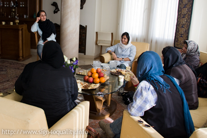
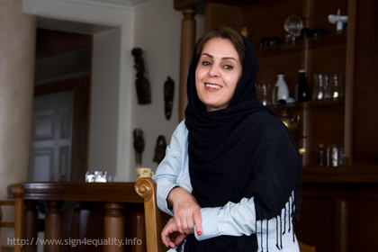

|
|

به بهانه دیدار جمعی از فعالان کمپین یک ملیون امضا با خانواده جعفر پناهی
غرفه 9 موزه سینما یا سلول های بند 209 زندان اوین؟
يكشنبه15 فروردین 1389
جعفر پناهی ، از فیلم سازان برجسته ایرانیست که بسیاری او را با فیلم هایی چون بادکنک سفید ، دایره ، طلای سرخ و ... می شناسند . وی در سال های اخیر به دلیل ساخت فیلم آفساید برنده جوایز هنری بسیاری از جمله جایزه جشنواره ونیز، مونترال، برلین و لوکارلو شده است که تمامی این جوایز در غرفه نه موزه سینما نگهداری می شود.غرفه ای که صاحب جوایز آن اکنون بیش از یک ماه است که در بازداشت به سر می برد و در این مدت تنها موفق به یکبار ملاقات و چند تماس کوتاه تلفنی با خانواده اش شده است .

جعفر پناهی از جمله فیلمسازانیست که هرگز نسبت به مسایل اجتماعی جامعه خود بی تفاوت نبوده است و همواره از حامیان بسیاری از حرکت های اجتماعی و از جمله کمپین یک ملیون امضا بوده است. به همین بهانه جمعی از فعالین کمپین یک ملیون امضا به دیدار خانواده جعفر پناهی رفتند تا ضمن تبریک سال نو همدلی خود را با خانواده این فیلم ساز ایرانی نشان دهند .
در این دیدار ، طاهره سعیدی همسر جعفر پناهی روحیه همسرش بعد از گذشت بیش از یک ماه در زندان را خوب توصیف می کند و معتقد است وی در طول دوران فعالیتش, اگرچه بارها در معرض برخوردهای غیر قانونی قرار گرفته, اما هرگز فعالیتی بر خلاف قانون انجام نداده است. خانم سعیدی ادامه بازداشت جعفر پناهی و عدم پاسخگویی در رابطه با اتهامات وی به او و خانواده اش را از مصادیق برخورد بر خلاف قانون می داند. وی معتقد است که همسرش همواره در فیلم هایش نسبت به مسایل اجتماعی حساس بوده است و تمامی فیلم های او نشان دهنده حساسیتش نسبت به این مسایل است.آیا توجه نسبت به مسایل اجتماعی و فیلم سازی در این حوزه جرم محسوب می شود؟

جعفر پناهی خود نیز در مصاحبه ای که در گذشته به بهانه ساخت فیلم آفساید با سایت تغییر برای برابری داشته است خود را فیلم ساز تبعیض معرفی می کند و یکی از جدی ترین تبعیض ها در جامعه خود را تبعیض نسبت به زنان می داند، او در رابطه با موضوع فیلم آفساید که اشاره ایست به ممانعت از حضور زنان در استادیوم می گوید : این فیلم اشاره به گوشه ای از تبعیض هاییست که در سرزمین من نسبت به زنان روا داشته می شود.
بیش از یک ماه از بازداشت این سینماگر ایرانی می گذرد و جوایز جعفر پناهی همچنان در غرفه 9 موزه سینما در معرض نمایش عموم قرار دارد .آیا او سفیر هنر ایرانیست یا متهم به حبس در سلول های بند 209 زندان اوین؟